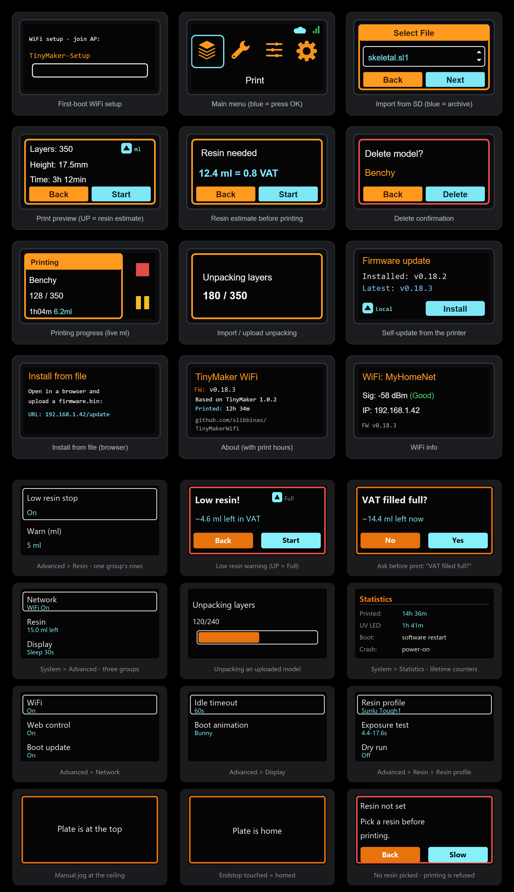
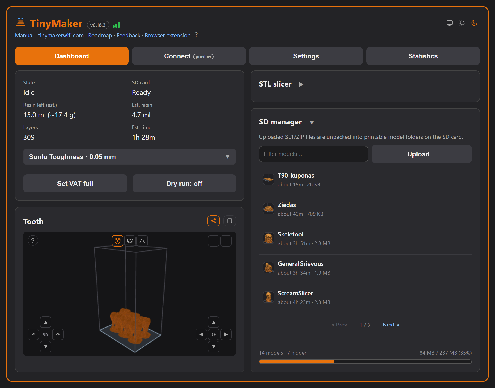
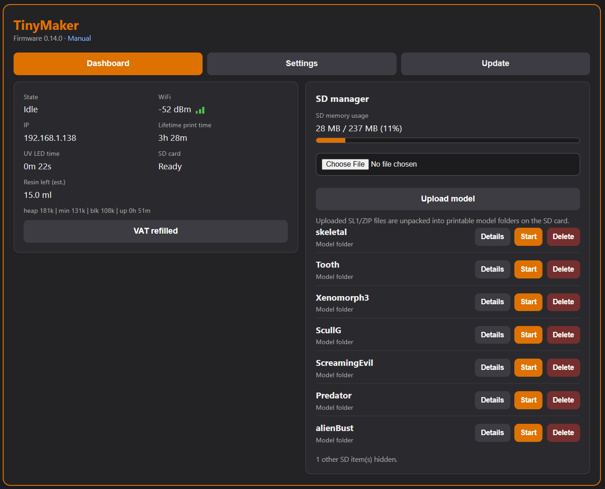
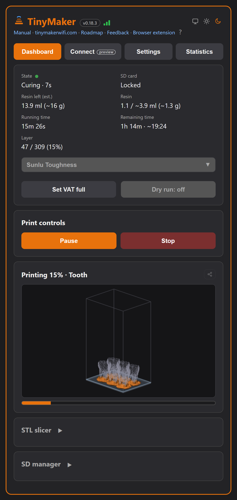
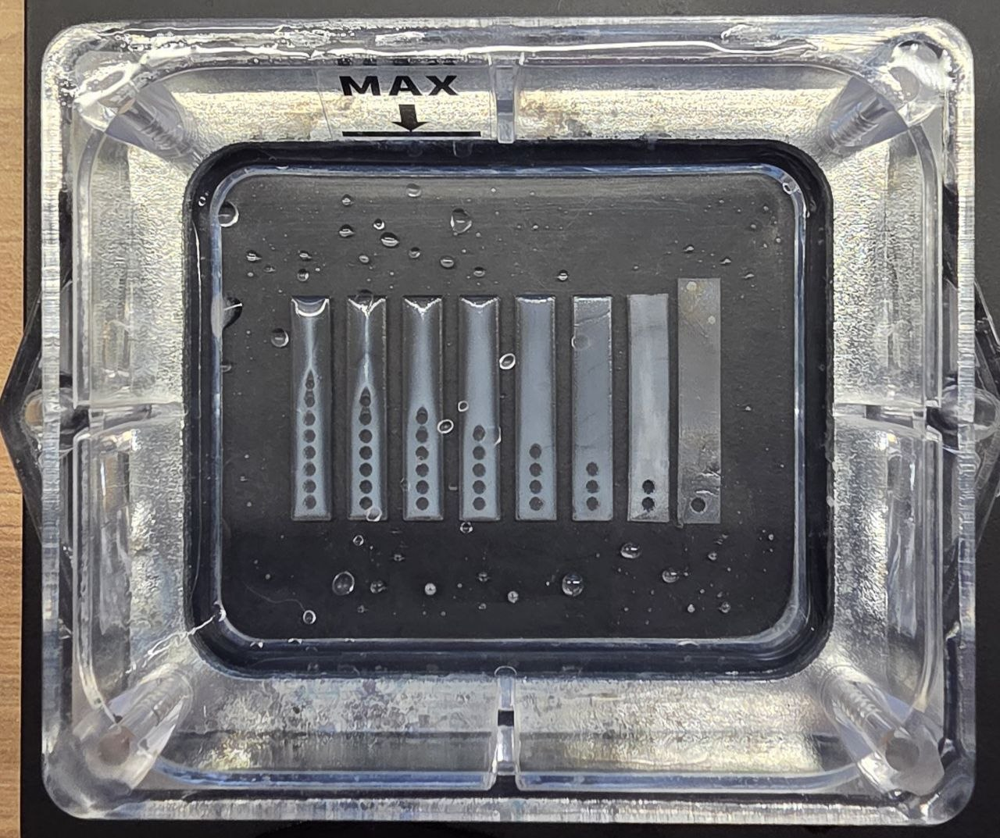
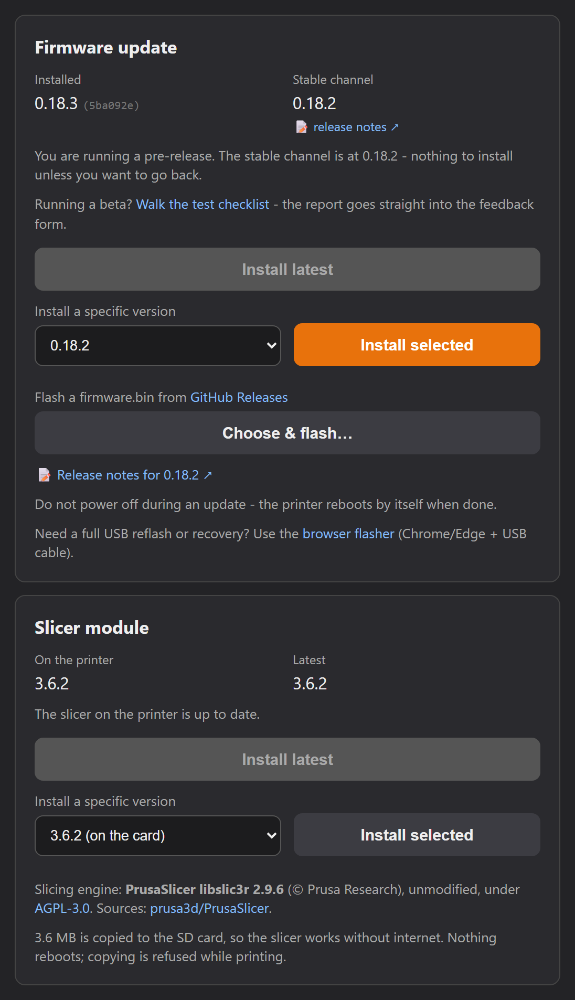
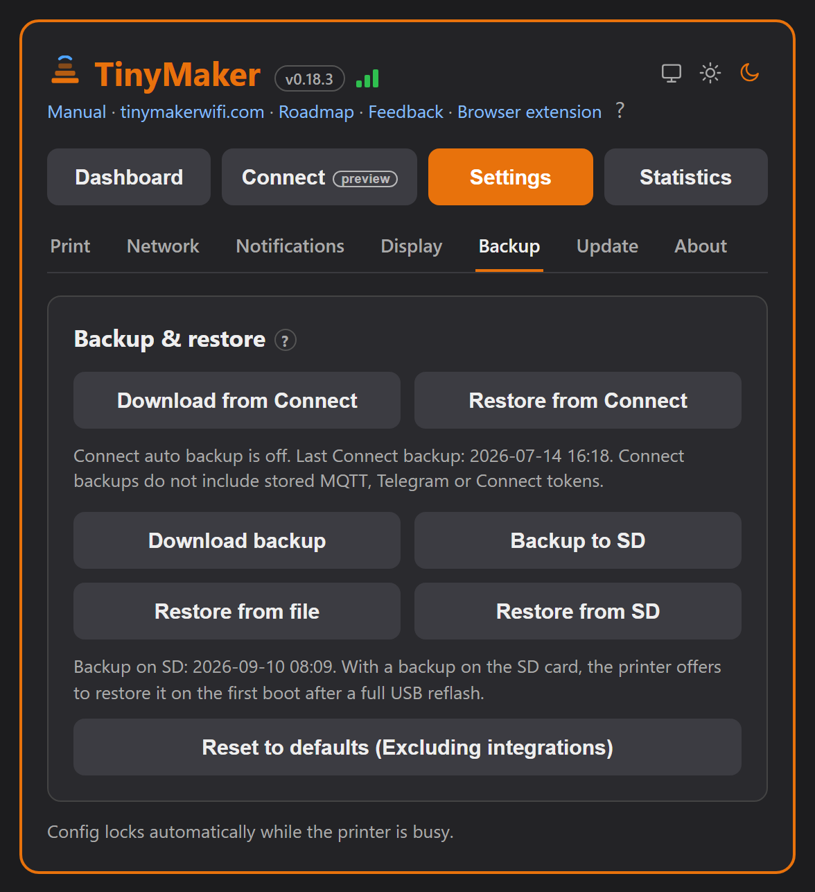

TinyMakerWifi
WiFi, wireless upload & over-the-air updates for the TinyMaker resin printer

WiFi, wireless upload & over-the-air updates for the TinyMaker resin printer
TinyMakerWifi is a modified firmware for the open-source TinyMaker MSLA (resin) 3D printer. It keeps everything the original firmware does and adds a wireless layer on top — so you can send models straight from your slicer and update the printer without ever touching the SD card or a USB cable.
.sl1/.zip from the SD card — no network needed.Everything wireless can be switched off right on the printer (System → Advanced), so you can always fall back to plain, offline SD-card printing.
TinyMaker-Setup WiFi hotspot.tinymaker.local)..sl1/.zip onto the SD card.This one-time step is done over USB. After it, every future update is wireless (see Updating the firmware). If your printer already runs TinyMakerWifi, skip this section.
Releases contain two files — they are not interchangeable:
| File | Used for | How |
|---|---|---|
firmware-full.bin | First-time USB flashing | flash at address 0x0 |
firmware.bin | Wireless updates only, later | browser, http://tinymaker.local/update |
firmware-full.bin. Flashing firmware.bin over USB leaves the printer unable to boot — it has no bootloader or partition table.firmware-full.bin from the project’s Releases page.firmware-full.bin, and set its address to 0.CH341SER.EXE, in the repo’s Driver folder), then try again. The official Espressif Flash Download Tool is an alternative — see the project README for its exact settings (SPI 40 MHz / DIO / 4 MB, file at 0x0).The first boot after flashing takes a few extra seconds and starts the TinyMaker-Setup hotspot. Printer settings (exposure, layer height…) return to factory defaults — unless a settings backup is on the SD card: the printer then offers to restore everything on first boot (see Backup & restore).
TinyMaker-Setup access point.http://192.168.4.1).
If the saved network can’t be reached, the printer simply boots offline after 15 s — printing from the SD card works as always. WiFi status, signal strength and IP are always under System → WiFi Info.
To move the printer to another network, erase the stored credentials:
TinyMaker-Setup portal.The small status display drives the whole on-printer interface — WiFi setup, upload progress, the resin estimate, the device toggles and self-update. Three buttons: Back, Up and OK. A green (connected) or grey (offline) dot on the main menu shows WiFi status.

The System menu is where the new features live: WiFi Info, Advanced (device toggles), Update (firmware) and About (version and lifetime print hours).
The printer emulates the Prusa SL1 network protocol, so PrusaSlicer’s “Send to printer” works out of the box.
TinyMaker.ini, in the repo) via File → Import → Import Config.tinymaker.local (or the IP from System → WiFi Info); the API key can be any text.

No WiFi? Copy an .sl1 or .zip (exported by PrusaSlicer or UVtools) into the root of the SD card. It appears in the Print menu in blue, among the models.
In the Print menu:
The printer has no resin sensor — instead it keeps count. Every printed layer’s cured volume is subtracted from the VAT level, and the estimate survives reboots and firmware updates.
On a model’s print preview, press Up to estimate the resin it needs. It is shown in ml and in vat fills — e.g. 12.4 ml = 0.8 VAT. Your VAT size is adjustable (10–40 ml, default 15) in Settings. Live ml is shown while printing.
Open the printer’s IP address in any browser for the full dashboard: live print status and controls, SD-card management with one-click start/import, device settings and firmware updates — in tabs styled to match the printer.

On a larger screen it spreads into two columns:

Open a model’s details and press Preview 3D: your browser rebuilds the shape from the sliced layers and draws it inside the build-volume box — so you can tell models apart without printing them. Start a print and the same view becomes a live progress render: the printed part fills in with color, the rest stays a ghost outline. It costs the printer nothing (the browser renders from a few prefetched layers).

System → Advanced on the printer holds the device toggles — OK changes a value, Back returns:
| Item | What it does |
|---|---|
| Screen timeout | Blank the status screen after 30 s…10 min of inactivity (Off = never). |
| Dry run | Test prints without UV — motion and display only. Great for checking mechanics or a new model without wasting resin. Note: while Dry run is on, the UV LED stays off everywhere, including the exposure test below. |
| VAT refilled | Press after refilling — restarts the level estimate from a full VAT. |
| Low resin pause | On = the print pauses for a refill when the estimate runs low. |
| Low resin warn | The warning/pause threshold, 1–3 ml (OK cycles). |
| Ask refill | On = every print starts with a “VAT refilled?” question. |
| WiFi | On/Off — the whole network (web, PrusaSlicer upload, MQTT, self-update). |
| Boot update | On = the printer checks for new firmware right after WiFi connects at boot and offers Install / Later on the screen. |
| Exposure test | Cures an 8-bar calibration strip straight from the printer — each bar gets a different exposure time around your Regular setting. Pick the crispest bar and set its time in Settings. Resin in the vat, no build plate. |
| Boot animation | Which animation plays at power-on — OK cycles Default and every animation installed on the SD card (see Boot animations below). |
| Web control | On/Off — browser actions. Off = the dashboard turns view-only; slicer upload and MQTT keep working. |
| MQTT | On/Off (shown once MQTT is configured in the dashboard). |
Both switches default to On and stay On after upgrading from an older version — nothing changes until you change it.
Exposure time is the single most important resin parameter — and every resin (even every color) cures differently. The test finds your resin’s time in one go: the printer cures an 8-bar strip straight from its masking LCD, each bar with a different exposure. No slicer, no SD file.
The bar times are proportional to your current Regular exposure (R) — from 40 % to 160 % of it, so the spread is meaningful for fast and slow resins alike. Bar 5 (100 %) is always your current setting:
| Bar (dots) | 1 | 2 | 3 | 4 | 5 | 6 | 7 | 8 |
|---|---|---|---|---|---|---|---|---|
| % of R | 40 | 55 | 70 | 85 | 100 | 115 | 135 | 160 |
| R = 14 s | 6 | 8 | 10 | 12 | 14 | 16 | 19 | 22 |
The ladder follows your setting automatically. To test shorter (or longer) times, just change Regular exposure in one place — dashboard → Settings → Regular exposure → Save, or the printer’s Settings menu — and the test range recalculates itself; the Advanced menu row shows the current range (e.g. “2-16s strip”). After the test, set the winning bar’s time as your final value.

The printer can play a short animation on its screen at power-on — and you can swap it. Installed animations live on the SD card and are picked in two places:
Getting new animations onto the printer:
.tmb animation file into the /bootanim folder on the SD card.Boot animations were contributed by Tanner Steorts (@Tann2019).
Three ways to update:
firmware.bin.tinymaker-ota environment (open System → Update on the printer first — that path keeps the strict gate).
Two comforts while updating: the printer also checks by itself — shortly after WiFi connects at boot it looks for a newer version and shows “Update available — Install / Later” on the screen (choosing Later offers to turn the check off; the switch lives in System → Advanced → Boot update and in dashboard Settings). And when you start an install from the browser, the dashboard locks under an “Updating firmware” overlay and reloads itself when the printer is back — no guessing whether it finished.
Everything you have configured — print settings, device toggles, MQTT, even the lifetime print and UV LED counters — fits in one backup file. In the dashboard’s Settings tab:
tinymaker-backup.json to your computer.
Two optional ways for the printer to reach you, both configured in the dashboard’s Settings tab (the Network & integrations card).
Configure an MQTT broker and the printer publishes itself to Home Assistant with auto-discovery: print state, current layer, resin used, resin left + a low-resin alert, and run/remaining time — all as HA sensors you can put on dashboards or automate notifications on.
No Home Assistant? The printer can message your phone directly through a Telegram bot when a print finishes (with the print time and resin used), pauses for a low-resin refill, or is canceled.
Setup takes two minutes — the same steps are shown inline in the dashboard (the ? help next to the Telegram switch):
/newbot and follow the prompts. BotFather replies with a bot token.After 15 s it boots offline — SD printing still works. To retry, reset WiFi (System → WiFi Info → OK, or hold Back while powering on) and set it up again.
Check the printer is on and shows a green dot / an IP under System → WiFi Info. Use that IP if tinymaker.local doesn’t resolve on your network. The API key value doesn’t matter.
Web control is off. Turn it back on on the printer: System → Advanced → Web control. (Slicer upload and MQTT are unaffected by this switch.)
Slice with the 0.05 mm profile. At a 0.10 mm setting the printer uses every other image by design.
It’s an estimate that only counts confirmed refills. Press VAT refilled after topping up, and keep Ask refill on so it stays honest.
The dual OTA partition keeps the previous firmware, so the printer should still boot. Try again from System → Update, or upload a firmware.bin from the dashboard’s Update tab.
Before flashing: dashboard → Settings → Backup to SD. After the reflash the printer finds the backup on the SD card and offers to restore it on first boot. Only WiFi needs to be set up again.
System → Advanced → WiFi → Off. The printer behaves like the original firmware; turn WiFi back on in the same place whenever you like.
TinyMakerWifi — the WiFi, wireless-upload and over-the-air-update firmware described in this manual — is created and maintained by Viktoras Sidlauskas (@slibbinas): the WiFi stack, wireless upload, OTA self-update, the 3D model preview & live print progress, and the resin estimation & VAT tracking.
The firmware is MIT-licensed; the TinyMaker hardware is CC BY-NC-SA 4.0. If TinyMakerWifi is useful to you, you can buy me a coffee — thank you!